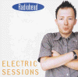

Electric Sessions
HOWL 23
Track 1 recorded for Evening Session, BBC Radio One 28/May/97
<1> Paranoid Android
Track 2 recorded for Jo Whiley, BBC Radio One 28/May/97
<2> Exit Music [For a Film]
Track 3-6 recorded for Evening Session, BBC Radio One 28/May/97
<3> Talk Show Host
<4> Climbing up the Walls
<5> Exit Music [For a Film]
<6> No Surprises
Track 7 recorded for Tonight with Jay Leno, Los Angeles 25/Jul/97
<7> Electioneering
Track 8 recorded for MTV, London, Jul/95
<8> Just
Track 9-11 recorded for Ten Meter Sessions, Holland, 22/Feb/95
<9> Anyone Can Play Guitar
<10> Bones
<11> Street Spirit [Fade Out]
Track 12 recorded for Evening Session, BBC Radio One ?/94
<12> Maquiladora
Type of recording : Radio Broadcasts
Quality : ?
Notes :